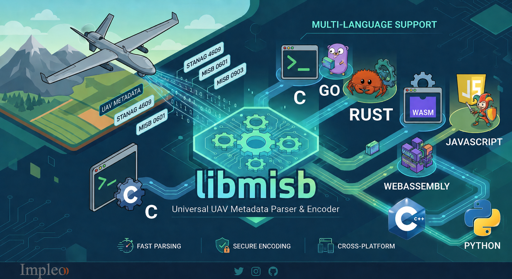

libmisb SDK
Process MISB ST 0601 metadata in native applications, browsers, and Node.js.
Decode your first packet
Native SDK · v0.12.0
Each installer includes the language bindings, examples, and an optional web decoder. Choose a portable ZIP to unpack the native SDK directly.
WebAssembly decoder
Serve the static distribution from a web server or install the npm tarball locally. Both include the decoder and its TypeScript declarations.
Customer manual
Start in demo mode, read an ST 0601 packet, and compare the result with the included examples. Read online or download the manual ZIP.